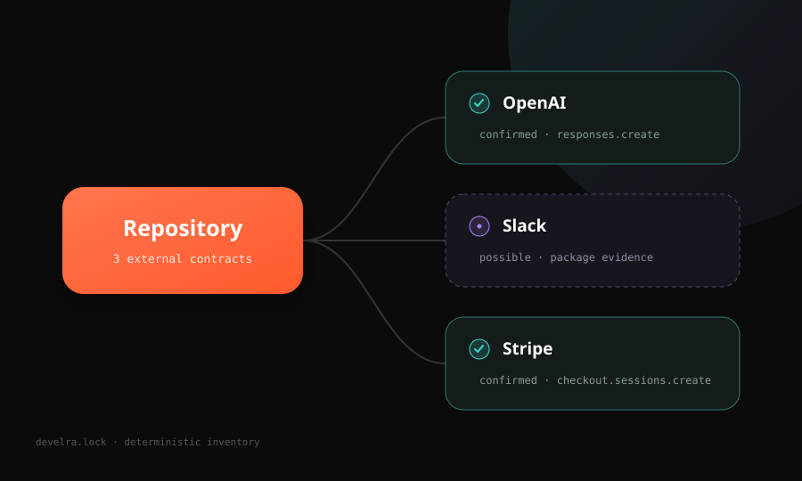

01
Discover
Scan manifests, imports, SDK calls, hosts, HTTP endpoints, and static MCP configuration—without executing project code.
Develra finds the external APIs, SDK operations, endpoints, webhooks, and MCP servers hiding in your repository—then locks the inventory for review and CI.
npx develra scan
Remote services are dependencies too. Develra turns the evidence already in your repository into a stable external-contract inventory.
Scan manifests, imports, SDK calls, hosts, HTTP endpoints, and static MCP configuration—without executing project code.
Commit a canonical develra.lock with relative paths,
explainable confidence, and no timestamps, secrets, or snippets.
Run develra check locally or in the bundled GitHub
Action to catch contract inventory changes before merge.
Every finding keeps evidence types and repository-relative paths, so confidence is reviewable instead of magical.

Default scans are offline and telemetry-free. Develra reads bounded static evidence, never imports repository modules, and never starts MCP servers.
Read the safety modelUseful output from the first command.
No imports, lifecycle scripts, binaries, or MCP processes.
No environment values, auth headers, queries, or snippets.
Commit the lockfile once, then let Develra compare every change. The Action is bundled and read-only—there is no runtime install or hosted service.
Add to your repositoryname: Develra
on: [pull_request]
permissions:
contents: read
jobs:
contracts:
runs-on: ubuntu-latest
steps:
- uses: actions/checkout@v6
- uses: develra-dev/develra@v0Develra is intentionally small, conservative, and useful without a hosted product.
No. Default scan and check are
offline, telemetry-free, and do not instantiate a network
client.
No. Package-only evidence is labeled possible. Imports, calls, endpoints, and supporting signals raise confidence.
The first release supports JavaScript, TypeScript, Python, raw HTTP endpoints, and static project-level MCP JSON configuration.
Yes. Provider packs are declarative YAML validated against a public schema, with a template and contributor workflow in the repository.
Scan locally. Commit the inventory. Review every change.
npx develra scan
Apache-2.0 · No signup · Runs offline